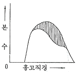
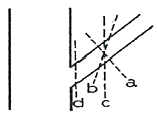
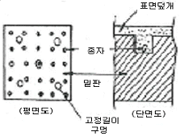

산림산업기사 (2011-03-20 기출문제)
1과목: 조림학
1. 아래 수종가운데 파종상에서 해가림 육묘를 하여야 되는 것은?
- 리기다소나무
- 강송
- 낙엽송
- 대왕송
(정답률: 78%)

2. 그림과 같은 구성을 보이는 동령임분에서 빗금친 부분을 간벌하였다면 어떤 간벌방식이 적용된 것인가?

- 하층간벌
- 수관간벌
- 택벌식간벌
- 기계적간벌
(정답률: 65%)
3. 테트라졸륨(2,3,5-triphenyltetrazoliurn chloride)에의 종자의 활력검사에 대한 설명 중 틀린 것은?
- 생활력이 있는 종자의 조직을 접촉하면 붉은색으로 변한다
- 국제종자검사규정에 의하면 서어나무류, 물푸레나무류 등이 이 검사방법을 적용한다.
- 이 용액은 광선에 조사되면 곧 못쓰게 되므로 어두운 곳에 보관해야 한다.
- 테트라졸륨의 반응은 휴면종자에는 잘 나타나지 않는다.
(정답률: 71%)
4. 다음 수종 중 결실주기가 가장 짧은 수종은?
- 너도밤나무
- 낙엽송
- 가문비나무
- 해송
(정답률: 47%)
5. 다음 수목의 종자 중 효율이 가장 높은 수준은?
- 은행나무
- 소나무
- 박달나무
- 밤나무
(정답률: 73%)
6. 삽목 번식이 가장 잘 되는 나무의 조합은?
- 밤나무, 소나무
- 낙우송, 느티나무
- 개나리, 회양목
- 아까시나무, 두릅나무
(정답률: 86%)
7. 호두나무를 묘간거리 4m, 열간거리 5m의 장방형 식재를 하면 1ha당 소요 묘목은?
- 400본
- 500본
- 600본
- 800본
(정답률: 83%)
8. 일반적으로 온대지역에 있어서의 삼림식생의 천이 순서는?
- 이끼류→1,2년생 초본류→다년생 초본류→관목류→양수 교목류→음수 교목류
- 1,2년생 초본류→이끼류→다년생 초본류→관목류→음수교목류→양수교목류
- 관목류→음수 교목류→1,2년생 초본류→양수교목류→다년생 초본류→이끼류
- 다년생 초본류→교목류→관목류→1,2년생 초본류→이끼류→음수 교목류→양수 교목류
(정답률: 87%)
9. 묘포에서 실지로 묘목 생산에 직접 이용되는 육묘상의 면적은 전체 묘포 소여면적의 몇 %에 해당하는가?
- 20~30%
- 40~50%
- 60~70%
- 80~95%
(정답률: 68%)
10. 소나무류, 가문비나무류, 낙엽송류의 종자를 정선하는 방법으로 유효하며, 전나무와 삼나무에는 그 효과가 적은 종자 정선법은?
- 사선법
- 풍선법
- 수선법
- 입선법
(정답률: 57%)
11. 양분의 결핍증상이 먼저 신엽 또는 경엽부터 나타나는 것은?
- 칼슘
- 인
- 칼륨
- 질소
(정답률: 65%)
12. 종자를 정선한 후 곧 노천매장법으로 저장해야 하는 종자는?
- 잣나무
- 상수리나무
- 일본잎갈나무
- 오동나무
(정답률: 62%)
13. 흙을 비벼보거나 육안으로 보아 모래가 1/3~2/3 가량 포함된 것으로 느껴지면 이 때의 토양은?
- 식토
- 석력토
- 사질양토
- 미사질양토
(정답률: 75%)
14. 산림토양단면에서 용탈층은 어느 층을 말하는가?
- A층
- B층
- C층
- D층
(정답률: 63%)
15. 잣나무의 가지치기 방법으로써 가장 좋은 것은?

- a
- b
- c
- d
(정답률: 82%)
16. 산벌작업에서 충분한 결실연도가 되어 실시하며 1회의 벌채로 그 목적을 달성하는 작업방법은?
- 예비벌
- 하종벌
- 후벌
- 종벌
(정답률: 66%)
17. 밤나무에서 병해충 이외에 생리적인 원인으로 나타나는 낙과를 효과적으로 방지하기 위해 시비를 요하는 미량원소는?
- 질소
- 칼륨
- 붕소
- 알루미늄
(정답률: 63%)
18. 다음 산림토양 수분 중 임목이 쉽게 흡수, 이용할 수 있는 수분은?
- 흡습수
- 수증기
- 팽윤수
- 모관수
(정답률: 83%)
19. 다음 중 하층간벌에 대한 설명으로 가장 거리가 먼 것은?(문제 복원 오류로 보기 3, 4번이 같습니다. 정확한 보기 내용을 아시는분 께서는 오류신고를 통하여 내용 작성 부탁 드립니다. 정답은 2번 입니다.)
- 가장 오랜 역사를 지닌 간벌방법으로 보통간벌이라고 한다.
- 우세목 중 결점이 있는 2급목만 벌채하는 방법이다.
- 일반적으로 양수성의 수종으로 구성된 임분에 적용된다.
- 일반적으로 양수성의 수종으로 구성된 임분에 적용된다.
(정답률: 83%)
20. 다음 중 낙엽성의 나자식물인 수종은?
- 벚나무
- 무궁화
- 은행나무
- 은사시나무
(정답률: 69%)
2과목: 산림보호학
21. 다음 산림해충 중 11월경에 2령 약충으로 탈피하여 11월~이듬해 3월까지 수목피해를 많이 주는 것은?
- 솔나방
- 솔잎혹파리
- 소나무좀
- 솔껍질깍지벌레
(정답률: 58%)
22. 파이토플라스마에 의한 수병이 아닌 것은?
- 뽕나무 오갈병
- 포플러 모자이크병
- 오동나무 빗자루병
- 대추나무 빗자루병
(정답률: 78%)
23. 해충 방제시에 사용하는 물리적 방제법이 아닌것은?
- 고온처리
- 습도처리
- 유살처리
- 방사선처리
(정답률: 56%)
24. 솔잎혹파리에 의한 피해증상이 아닌 것은?
- 솔잎의 뒤틀림
- 솔잎 기부의 혹
- 솔잎의 생장이 저해
- 솔잎이 조기에 변색함
(정답률: 65%)
25. 모잘록병의 환경개선에 의한 간접적인 방제법이 아닌 것은?
- 병든 묘목은 발견 즉시 뽑아 태운다.
- 파종량을 적게 하고, 복토를 두텁지 않게 한다.
- 인산질비료의 과용을 삼가고, 질소질비료를 충분히 준다.
- 묘상의 배수를 철저히 하여 과습을 피하고 통기성을 양호하게 해준다.
(정답률: 76%)
26. 균류의 분류 중 불완전균류의 설명에 속하는 것은?
- 균사에 격막이 없고, 유주포자를 생성하는 특징이 있다.
- 세계적으로 22000여종이 알려져 있으며, 대부분의 버섯이 이에 속한다.
- 무성생식으로 분생포자를 만들고, 유성생식으로 자낭포자를 만든다.
- 유성생식 세대가 알려져 있지 않기 때문에 편의상 무성세대로만 분류된 집단이다.
(정답률: 55%)
27. 훈증제에 대한 설명이 아닌 것은?
- 묘포장에서 활용이 용이하다.
- 메틸브로마이드를 많이 사용한다.
- 약제는 액상으로 해충에 침투한다.
- 질식사를 시키는 방법이므로 임내에서 활용이 어렵다.
(정답률: 65%)
28. 기생성 종자식물에 대하여 잘못 설명한 것은?
- 새삼은 바람에 날리는 종자에 의해 먼 거리로 전파된다.
- 겨우살이는 겨울철에도 마치 가지에 푸른잎이 무성하게 자라고 있는 것처럼 보인다.
- 겨우살이는 종자를 먹은 새의 배설물에 섞여 전파된다.
- 새삼은 흡기를 이용하여 기주식물의 양분과 수분을 빼앗는다.
(정답률: 47%)
29. 보르도액에 대하여 설명한 것으로 틀린 것은?
- 보르도액은 황산동과 생석회로 조제한다.
- 보르도액은 전착제를 가해서 고압분무기를 식물체 표면에 골고루 묻도록 뿌린다.
- 황산동액과 석회유를 따로따로 나무통에서 만든 후 순서대로 황산동액에다 석회유를 부어서 혼합해야 한다.
- 보르도액은 사용할 때마다 만들며 유효기간은 약2주간이다.
(정답률: 57%)
30. 도토리거위벌레의 생태에 관하여 잘못 설명한 것은?
- 상수리나무 등 참나무류의 도토리에 산란한다.
- 도토리가 달린 가지를 잘라 땅에 떨어뜨린다.
- 땅 속에서 흙집을 짓고 노숙유충으로 월동한다.
- 알에서 부화한 유충은 어린 가지를 식해한다.
(정답률: 49%)
31. 야생동물 분포조사 방법에 해당하지 않는 것은?
- 포획조사
- 육안조사
- 청문·설문조사
- 지형조사
(정답률: 72%)
32. 빗자루병에 걸린 대추나무에 수간주입하여 치료하는 약제는?
- 베노밀
- NCS제
- 사이클로헥사마이드
- 옥시테트라사이클린
(정답률: 81%)
33. 수목 뿌리혹병(근두암종병:crown gall)의 병원체는?
- 바이러스(Virus)
- 진균(Fungus)
- 파이토플라스마
- 세균(Bacteria)
(정답률: 76%)
34. 다음 중 물에 의하여 전반되는 병균은?
- 녹병
- 흰가루병
- 밤나무 줄기마름병
- 낙엽송 가지끝마름병
(정답률: 50%)
35. 잎에 기생하며 흡즙 가해하는 것으로 노린재목에 속하는 곤충은?
- 대벌레
- 배나무방패벌레
- 솔노랑잎벌
- 애기잎말이나방
(정답률: 62%)
36. 다음 중 볕데기를 입기 쉬운 수종이 아닌 것은?
- 오동나무
- 호두나무
- 굴참나무
- 가문비나무
(정답률: 76%)
37. 다음 중에서 잣나무 털녹병균의 주요 전반 방법은?
- 종자
- 토양
- 바람
- 곤충
(정답률: 60%)
38. 다음 중 소나무재선충병의 매개충은?
- 소나무좀
- 솔잎혹파리
- 솔수염하늘소
- 솔껍질깍지벌레
(정답률: 76%)
39. 난균류의 모잘록병원균의 중요한 월동 장소는?
- 곤충체내
- 잡초
- 병든 조직 또는 토양
- 나무줄기
(정답률: 83%)
40. 다음 중 천공성 해충에 속하지 않는 것은?
- 하늘소과
- 긴나무좀과
- 혹벌과
- 박쥐나방과
(정답률: 63%)
3과목: 임업경영학
41. 공·사유림 경영계획 편성 시 임반을 표기하는 요령으로 맞는 것은?
- 아라비아 숫자로 표시
- 가, 나, 다 로 표시
- 아라비아 숫자와 가, 나, 다를 조합하여 표시
- 가, 나, 다와 아라비아 숫자를 조합하여 표시
(정답률: 72%)
42. 임분의 재적을 측정하는 방법 중에서 표본점을 필요로 하지 않기 때문에 플롯레스샘플링(plotless sampling)이라고 하는 방법은?
- 대상 표준지법
- 각산정 표준지법
- 원형 표준지법
- 표본조사법
(정답률: 73%)
43. 매년 말에 표고버섯 수익으로 200만원이 얻어지고 있다. 이 자본가는 얼마인가?(단, 무한연년 수입의 전가합계(자본가) 계산식으로 구하되 이율은 4%를 적용한다.)
- 6000만원
- 5000만원
- 800만원
- 8000만원
(정답률: 60%)
44. 우리나라 임업경영의 특성을 기술적 특성과 경제적 특성으로 구분할 때 다음 중 기술적 특성을 설명한 것으로 옳은 것은?
- 원목가격의 구성요소의 대부분이 운반비이다.
- 임업노동은 계절적 제약을 크게 받지 않는다.
- 임목의 성숙기가 일정하지 않다.
- 임업생산은 조방적이다.
(정답률: 49%)
45. 임령이 24년인 임목을 수간석해 하였을 때 단면번호 1번의 연륜수가 19개이다. 이 임목이 1.2m자라는데 소요된 기간은?
- 4년
- 5년
- 6년
- 7년
(정답률: 70%)
46. 임지기망가의 크기에 대한 설명으로 옳지 못한 것은?
- 주벌수익과 간벌수익이 클수록 임지기망가는 커진다.
- 주벌수익과 간벌수익의 시기가 빠를수록 임지기망가는 작아진다.
- 이율이 높을수록 임지기망가는 작아진다.
- 조림비가 클수록 임지기망가는 작아진다.
(정답률: 68%)
47. 손익분기점 분석의 가정이 아닌 것은?
- 제품의 판매가는 생산량에 따라 변한다.
- 제품 단위당 비용은 일정하다.
- 재고는 없다.
- 제품의 생산능률은 변함이 없다.
(정답률: 82%)
48. 현 산림축적이 1000m3, 생장률이 연3%일 때 10년 후 산림 축적을 복리식 후가계산 공식으로 구하면 약 얼마인가?
- 1303m3
- 1323m3
- 1343m3
- 1⑤3m3
(정답률: 64%)
49. 임업경영자산 중 유동자산으로 맞는 것은?
- 토지
- 구축물
- 대동물
- 미처분 임산물
(정답률: 80%)
50. 산림경영의 주요 부대시설에 관한 내용이 아닌 것은?
- 운반에 관한 시설
- 종묘에 관한 시설
- 삼림보호에 관한 시설
- 석산 개발에 관한 시설
(정답률: 78%)
51. 시장가역산법에 의해 임목의 가치를 평가하려고 할 때 계산 항목에 포함되지 않는 것은?
- 임목 육성에 토입된 비용
- 벌출 운반에 소요될 것으로 예측되는 총비용
- 벌출된 원목의 매매로부터 예측되는 최단거리 시장가격
- 벌출·운반 및 매각사업에서 얻어질 수 있을 것으로 예측되는 정상이윤
(정답률: 61%)
52. 산림경리의 업무 내용이 아닌 것은?
- 산림조사
- 조림계획
- 수확규정
- 임업소득율
(정답률: 58%)
53. 다음 중 택벌림 시업에서만 적용하는 임목생산 기간은?
- 벌채령
- 벌기령
- 회귀년
- 윤벌기
(정답률: 79%)
54. 지황조사에서 유효 토심이 몇cm 이상이면 심에 해당하는가?
- 30cm
- 40cm
- 50cm
- 60cm
(정답률: 58%)
55. 다음 중 고정자산의 설명으로 옳은 것은?
- 처분을 목적으로 소유하는 자산
- 물리적 이동이 불가능한 자산
- 시간에 따른 가치의 변화가 없는 자산
- 자산이 가지고 있는 생산능력을 이용하기 위한자산
(정답률: 65%)
56. 표준지법에 의하여 임목재적을 산출할 때 임분의 면적을 A, 표준지 면적을 a, 표준지 재적을 v라고 하면 임분재적 V는?(오류 신고가 접수된 문제입니다. 반드시 정답과 해설을 확인하시기 바랍니다.)
- V = v×(A/a)
- V = v×(a/A)
- V = (A2a)/v
- V = (2a)×(v/A)
(정답률: 17%)
57. 보속성 원칙에서 협의의 보속개념이란?
- 목재 생산의 보속성
- 목재 공급의 보속성
- 공공경제적 보속성
- 사경제적 보속성
(정답률: 62%)
58. Moller의 항속림사상과 가장 관계가 깊은 것은?
- 수익성의 원칙
- 공공성의 원칙
- 합자연성의 원칙
- 환경보존의 원칙
(정답률: 61%)
59. 법정림(개벌작업)에서 작업급의 윤벌기가 50년인 경우의 법정 수확률은 몇 %인가?
- 2%
- 3%
- 4%
- 5%
(정답률: 50%)
60. 임업자산 중 가치가 가장 큰 것은?
- 묘목
- 임지
- 임목축적
- 비료
(정답률: 70%)
4과목: 산림공학
61. 다음 그림과 같이 밑판, 종자 및 표면 덮개의 3부분으로 구성된 일반적인 인공떼제품을 무엇이라고 하는가?

- 식생자루
- 식생매트
- 식생대
- 식생반
(정답률: 76%)
62. 가선집재작업의 장점과 거리가 먼 것은?
- 지형조건의 영향을 적게 받는다.
- 트랙터 집재 등에 비하여 노동생산성이 높다.
- 생태적으로 잔존임분의 피해를 최소화 할 수 있다.
- 트랙터 집재에 비해 집재작업에 필요한 에너지가 적게 소요된다.
(정답률: 57%)
63. 사방댐의 방수로에 대한 설명으로 틀린 것은?
- 방수로의 높이는 댐어깨보다 낮아야 한다.
- 방수로의 높이는 댐마루보다 낮아야 한다.
- 방수로 양옆의 물매는 1:2를 표준으로 한다.
- 방수로의 위치는 계류의 중심부에 설치하는 것이 원칙이다.
(정답률: 62%)
64. 사방댐의 설계요인에서 위치 선정의 원칙 중 틀린 것은?
- 댐의 위치는 상류부고 좁고 댐자리(dam site)가 넓은 개소가 적당하다.
- 댐의 위치는 계상 및 양안에 암반이 존재하는 것을 원칙으로 한다.
- 지계의 합류점 부근에 댐을 계획할 때에는 통상합류점의 하류부가 위치 선정의 기준이 된다.
- 계단상 댐을 계획하는 경우에는 첫 번째 댐의 추정퇴사선이 구계상물매를 자르는 점에 상류댐의 계획위치가 오도록 한다.
(정답률: 80%)
65. 산림작업 중에서 노동재해의 발생률이 가장 높은 작업은?
- 육림작업
- 조림작업
- 임목수확작업
- 어린나무 가꾸기
(정답률: 79%)
66. 와이어로프의 꼬임 중에서 보통꼬임의 특징과 거리가 먼 것은?
- 취급이 용이하다.
- 꼬임이 안정되어 있다.
- 킹크가 생기기 어렵다.
- 가공본줄에 많이 사용된다.
(정답률: 55%)
67. 돌을 뜰 때 앞면·길이·뒷면·접촉부· 및 허리치기의 치수를 특별히 맞도록 지정하여 깨 낸 석재를 무엇이라 하는가?
- 막깬돌
- 견치돌
- 야면석
- 마름돌
(정답률: 77%)
68. 임도 노면의 토사도에 대한 설명과 거리가 먼 것은?
- 교통량이 많은 도로에 많이 쓰인다.
- 임도노면은 자연적인 흙을 사용한다.
- 대체적으로 유수에 의한 피해가 많다.
- 점토와 모래의 혼합물로 구성되어 있다.
(정답률: 70%)
69. 산악지대의 임도노선 선정방식에 있어서 산정림, 계곡림의 숲을 개발하는데 가장 적합한 방식은?
- 돌입방식
- 지그재그방식
- 대각선방식
- 순환노선방식
(정답률: 68%)
70. 원목을 집재하기 위하여 차대틀 위에 원목을 얹어 싣고 가는 집재기를 무엇이라 하는가?
- 스키더
- 펠러번쳐
- 포워더
- 야더집재기
(정답률: 62%)
71. 대표적인 다공정임업기계로서 벌도와 가지훑기, 통나무자르기 작업을 한 공정에서 수행할 수 있는 고성능 임업기계는 무엇인가?
- 프로세서
- 타워야더
- 하베스터
- 펠러번쳐
(정답률: 74%)
72. A, B 두지점간의 수준측량결과, 전시가 45m, 후시가 90m이다 A점의 지반고가 150m 일 때 B점의 지반고는 얼마인가?
- 145m
- 195m
- 245m
- 295m
(정답률: 65%)
73. 어느 지역에 시설되는 1차선 임도의 노폭을 산출하고자 적당한 임도의 조건을 조사한 결과 설계속도가 40km/h이고 자동차폭은 2m이었다. 이때 설계속도에 의한 차도폭을 구하면 얼마인가?
- 3.3m
- 3.6m
- 4.3m
- 4.6m
(정답률: 39%)
74. 인간의 도움이나 관리없이 도시환경에 적응, 진화해 온 식물집단으로 식생천이 초기단계의 자생수종이나 외래수종들이 우점하는 식물집단은?
- 도시형식물군집
- 자생식물군집
- 귀화식물군집
- 침입형식물군집
(정답률: 68%)
75. 횡단배수구의 설치장소와 거리가 먼 것은?
- 체류수가 없는 곳
- 구조물이 앞이나 뒤
- 옆도랑물이 역류하는 곳
- 유하방향의 종단물매 변이점
(정답률: 67%)
76. 재질이 굳고 내구성도 강하며 외관이 아름다운 석재로서 토목공사에서 마름돌, 견치돌, 판석, 콘크리트골재 등으로 이용되는 것은?
- 안산암
- 응회암
- 화강암
- 대리석
(정답률: 70%)
77. 유역면적이 40ha이고, 최대시우량이 100m/h인 지역에 야계수로 단면을 설계하려면 최대홍수 유량은 얼마로 적용하여야 하는가? (단, 합리식법으로 산정하고, 유출계수(c)는 0.7이다,)(오류 신고가 접수된 문제입니다. 반드시 정답과 해설을 확인하시기 바랍니다.)
- 2.2354m3/s
- 3.2132m3/s
- 4.2514m3/s
- 5.8338m3/s
(정답률: 30%)
78. 해안사지 조림용 수종이 구비해야 할 일반적인 조건이 아닌 것은?
- 바람에 대한 저항력이 클 것
- 양분과 수분에 대한 요구가 클 것
- 온도의 급격한 변화에도 잘 견디어 낼 것
- 울폐력이 좋고 낙엽 낙지 등에 의하여 지력을 증진시킬 수 있을 것
(정답률: 78%)
79. 간선임도의 일반적인 특성을 작업도와 비교하여 설명한 것 중 가장 적절한 것은?
- 간선임도는 통행량이 적고 통행길이는 짧다.
- 간선임도는 통행량이 많고 주행속도가 느리다.
- 간선임도는 주행속도가 빠르고 통행길이도 길다.
- 간선임도는 통행길이가 길고 통행목적은 이동성보다 작업적인 성격이 강하다.
(정답률: 53%)
80. 대경목의 벌채위치는 보통 지상에서 몇 cm높이에서 벌채하는가?
- 5~10cm
- 20~30cm
- 40~50cm
- 60~70cm
(정답률: 60%)